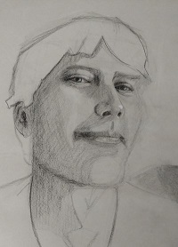

Jeffrey Shepherd
software developer


Hello!
Hi. I'm Jeff, a typical geek and computer nerd. I love Sci-Fi, Fantasy, Dungeons and Dragons, computer games and so on. How I'm not a typical geek is that, like Spock, I find too many things fascinating. My main interests are politics, history, science, art, and computers. In the 90s, I published a newspaper in addition to time spent in the Air National Guard. In the naughts and teens, I worked in politics at all levels of political campaigning. Today, I'm pursuing a degree in web development to fulfill what has always been my destiny: life as a software developer.